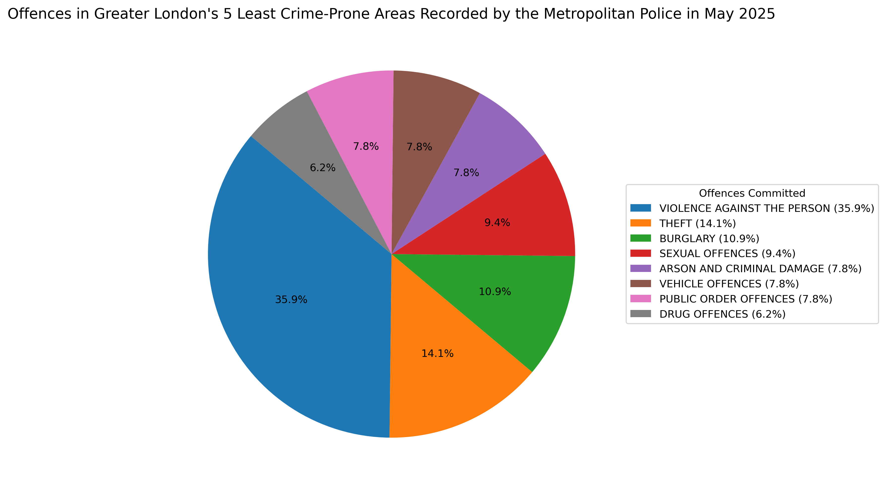

Most Offences in the Least Crime-Prone Areas Recorded by the Metropolitan Police in May 2025

Legend
- VIOLENCE AGAINST THE PERSON (35.9%)
- THEFT (14.1%)
- BURGLARY (10.9%)
- SEXUAL OFFENCES (9.4%)
- ARSON AND CRIMINAL DAMAGE (7.8%)
- VEHICLE OFFENCES (7.8%)
- PUBLIC ORDER OFFENCES (7.8%)
- DRUG OFFENCES (6.2%)